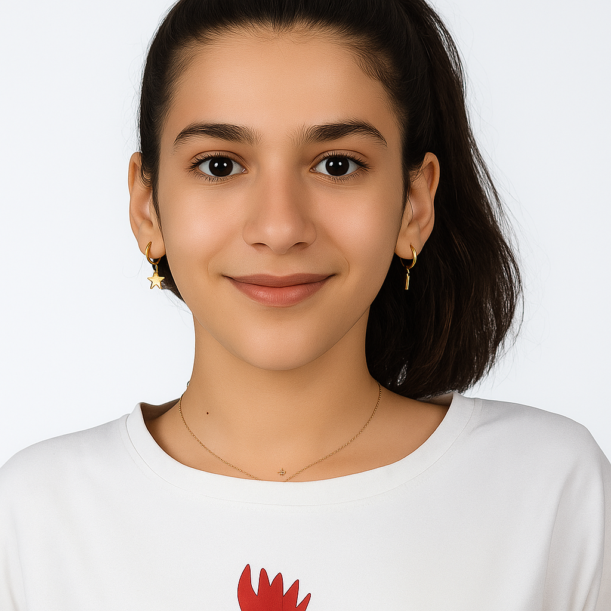

مقدم الموقع

أحب أعرفكم بنفسي
بيانات شخصية
الاسم
جوي أيمن فاروق خليل
المرحلة
خامسة وسادسة
الموبايل
01015279747
مهرجان الكرازة المرقسية 2025
اثبت على ما تعلمت
شاركت في مهرجان الكرازة المرقسية 2025 في مسابقة الكمبيوتر، وهذا الموقع هو مشروعي المقدم للمسابقة.
الإيبارشية
إيبارشية البحر الأحمر
الكنيسة
كنيسة أبي سيفين بسفاجا
اسم ونوع العمل
مسابقة الكمبيوتر
تفاصيل المشروع
المستوى الأول
المهمة: صمم موقعاً إلكترونياً يتكون من أربع صفحات
محتويات الموقع
الصفحة الرئيسية: مقدمة عن الكنيسة والموقع
معلومات عن كنيستك: تاريخ الكنيسة والموقع الجغرافي
شفيع الكنيسة: حياة وسيرة القديس فيلوباتير مرقريوس أبو سيفين
كهنة الكنيسة: تعريف بآباء الكنيسة المحبوبين
مقدم الموقع: معلومات عن مُعِد الموقع (هذه الصفحة)
المعلومات التقنية
التقنيات المستخدمة
HTML5
CSS3
JavaScript
تصميم متجاوب
المميزات
تصميم متجاوب مع جميع الأجهزة
دعم اللغة العربية
تحسين محركات البحث
إمكانية الوصول
الهدف من الموقع
التعريف بكنيستنا المحبوبة
نشر المعلومات الدينية
تطبيق مهارات البرمجة
خدمة المجتمع الكنسي
رسالة شخصية
معلومات التواصل
للتواصل
الموبايل:
01015279747
الكنيسة:
كنيسة أبي سيفين مرقريوس بسفاجا
الإيبارشية:
إيبارشية البحر الأحمر